Thank you for buying this record. What follows is its documentation: the
pressing identified, the matrix / runout transcribed by hand from the dead
wax, and the condition as assessed before it was listed. It is yours to keep
with the record.
— Paul, Vinyl Curator
Bob Dylan
Oh Mercy
2020 (labels carry a 2018 copyright; streeted July 2020 per Discogs and MoFi's own archive) · Mobile Fidelity Sound Lab (under license from Columbia / Sony Music) MFSL 2-488 (Columbia 88875022541) · Stereo · US · 2xLP, 45 RPM, 180g, gatefold, numbered limited edition · 45 RPM
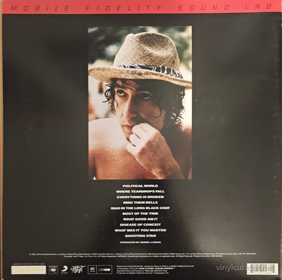
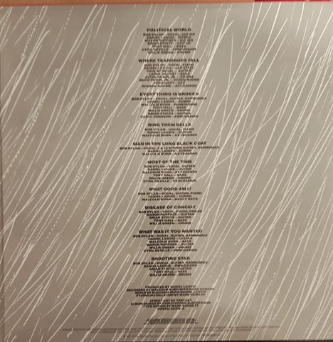
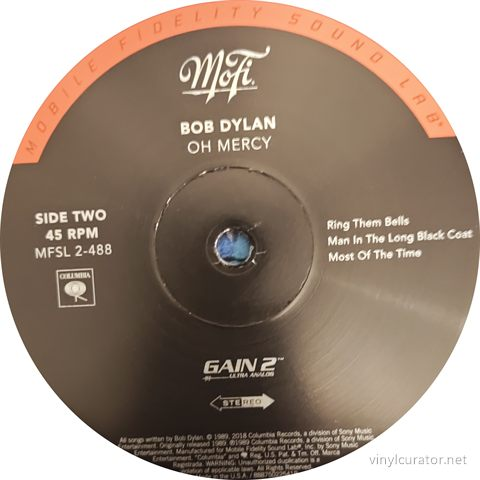
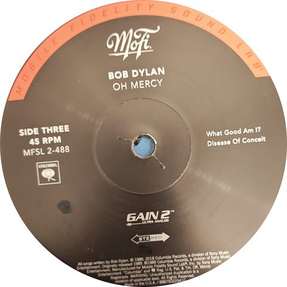
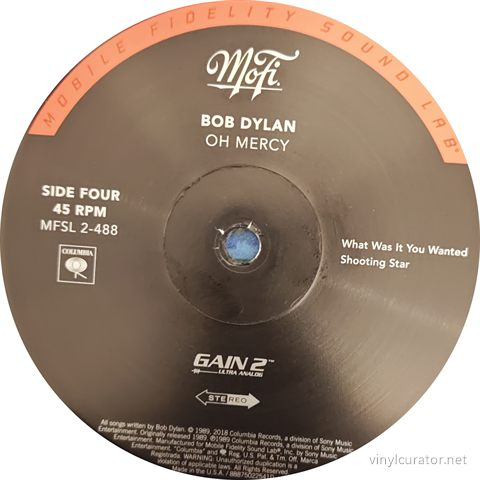
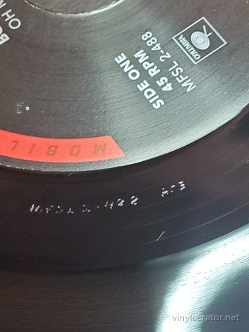
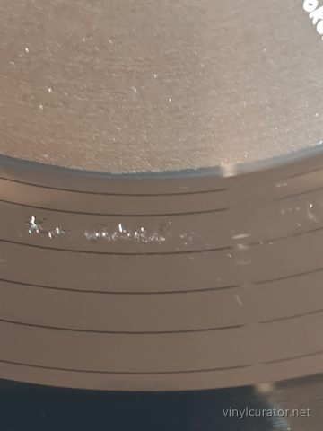
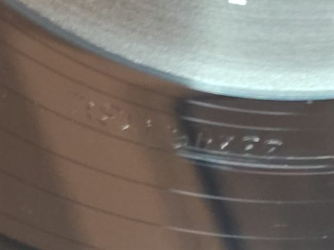
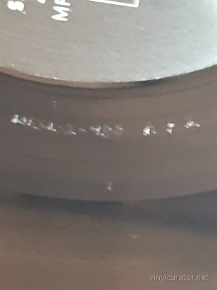
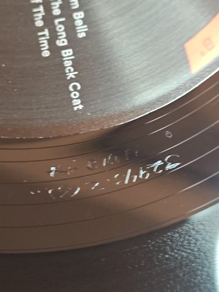
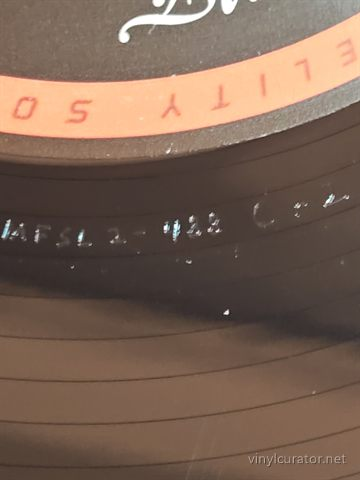
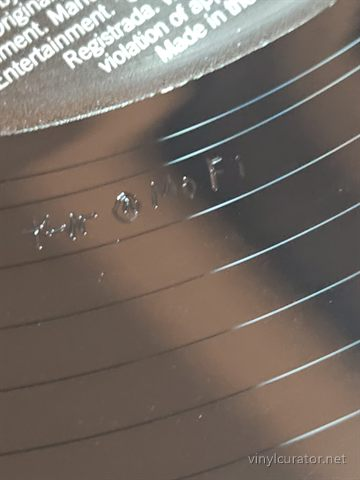
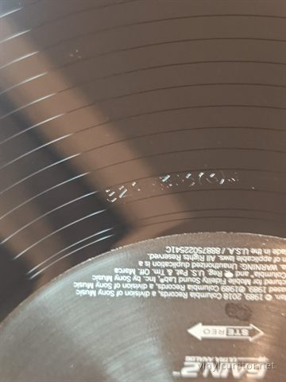
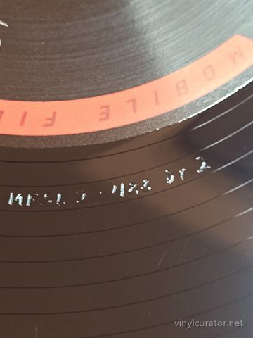
Pressing details
Label
Mobile Fidelity Sound Lab (under license from Columbia / Sony Music)
Catalogue number
MFSL 2-488 (Columbia 88875022541)
Year
2020 (labels carry a 2018 copyright; streeted July 2020 per Discogs and MoFi's own archive)
Bob Dylan (vocals, guitar, 6- & 12-string guitar, piano, organ, harmonica), Daniel Lanois (guitar, dobro, lap steel, omnichord), Malcolm Burn (keyboards, bass, tambourine, 'mercy keys'), Tony Hall (bass), Willie Green (drums), Brian Stoltz (guitar), Mason Ruffner (guitar), Paul Synegal (guitar), Larry Jolivet (bass), Alton Rubin Jr. (drums), Cyril Neville (percussion), Daryl Johnson (percussion), David Rubin (rub board), John Hart (saxophone), Rockin' Dopsie (accordion)
Matrix / Runout
Side A: 33249.1(3)
MFSL-1-488 Ar3
KEVIN@MOFI
Side B: 32943.2(3)
MFSL 2-488 Br2
KEVIN@MOFI
Side C: 32943.3(3)
MFSL 2-488 Cr2
KEVIN@MOFI
Side D: 32943.4(3)
MFSL 2-488 Dr2
KEVIN@MOFI
Condition
Cover
MN/NM
Vinyl
NN/NM/NM/NN
Variant chronology
1989 - US Columbia C 45281 original LP
1989 - UK/Europe Columbia 465921 1 original LP
2010s - Europe Sony/Legacy 180g reissue
2020 - US MoFi MFSL 2-488 numbered 45 RPM 2xLP, Gain 2 Ultra Analog, RTI press <- this copy
This Pressing
Licensed audiophile reissue (2020, numbered edition of 4,000) - MoFi black label with orange rim band, Gain 2 Ultra Analog; 'Kw@MoFi' (Krieg Wunderlich) etched in all four runouts, RTI press, 45 RPM 2xLP.
The Album
By the late 1980s Bob Dylan was widely written off as a spent force, and he has described himself at the time as creatively becalmed. Bono suggested he work with Daniel Lanois, and in the spring of 1989 Dylan set up in a rented New Orleans house Lanois had converted into a studio, cutting the record with a loose Louisiana crew. The humid, reverberant atmosphere Lanois conjured - swamp ambience, tremolo guitars, distant percussion - gave Dylan a sonic world rather than a backing band, and the sessions were famously tense, the two men clashing over arrangements even as they pulled great performances out of each other. The songs stand among his strongest of the era: the apocalyptic litany of 'Political World,' the noir ballad 'Man In The Long Black Coat,' the ache of 'Most Of The Time,' and the hymn-like 'Ring Them Bells' and 'What Good Am I?,' with 'Everything Is Broken' supplying the blues bite. Dylan later devoted a long, candid chapter of 'Chronicles: Volume One' to the making of the album, including his frustration that some songs were never fully realized - 'Series of Dreams' and 'Dignity' were left off entirely and became prized outtakes. Critics greeted it as an unambiguous return to form, the first Dylan album in a decade discussed in the same breath as his classic work, and it restored his credibility as a writer at exactly the moment he needed it. Its influence runs directly into the Lanois-produced 'Time Out of Mind' (1997) and the celebrated late career that followed, and it remains the template for the atmospheric, weathered sound of Dylan's third act.
Tracklist
Side 1
1. Political World
2. Where Teardrops Fall
3. Everything Is Broken
Side 2
1. Ring Them Bells
2. Man In The Long Black Coat
3. Most Of The Time
Side 3
1. What Good Am I?
2. Disease Of Conceit
Side 4
1. What Was It You Wanted
2. Shooting Star
The Label
Matte-black MoFi labels with the orange/red Mobile Fidelity Sound Lab rim band, MoFi script logo, GAIN 2 Ultra Analog badge and the licensed-in Columbia walking-eye box - MoFi's standard 2010s Sony-era design. The dual copyright line '(c) 1989, 2018 Columbia Records... Manufactured for Mobile Fidelity Sound Lab, Inc. by Sony Music Entertainment' documents the Sony license that governed MoFi's Dylan series. This is the Sebastopol Gain 2 Ultra Analog period, with plating/pressing at RTI, when MoFi issued Sony-catalog titles as numbered 4,000-copy 45 RPM sets. There is only one MoFi vinyl variant of this title, so the label design plus runout match settles provenance completely; within the album's hierarchy it is a licensed audiophile reissue, not a Columbia pressing.
Fidelity
Mastered by Krieg Wunderlich (assisted by Shawn R. Britton) at MoFi Sebastopol on the Gain 2 Ultra Analog system and pressed at RTI - about the quietest 180g pressing made in the US. The 45 RPM cut spreads ten tracks over four sides, giving Lanois's swamp reverb more air, deeper low end and longer ambient tails than the 1989 Columbia LP or early CD; forum consensus (Steve Hoffman et al.) is strongly positive on drums, bass and atmosphere, with scattered complaints of non-fill on some RTI copies. Caveat: MoFi's 2015-2022 workflow generally inserted a DSD256 step between tape and lacquer, disclosed after the 2022 controversy, so this is a high-resolution-sourced cut rather than pure analog. In the album's fidelity hierarchy it sits at the top alongside MoFi's own SACD, well ahead of the 1989 Columbia original and later Sony represses; no Analogue Productions, One-Step or equivalent competitor exists for this title.
Notes
2020 Mobile Fidelity Sound Lab MFSL 2-488 - numbered limited-edition 45 RPM double LP, not an original Columbia pressing. Runouts MFSL 2-488 Ar3/Br2/Cr2/Dr2 with 'Kw@MoFi' (Krieg Wunderlich - the collector's transcription 'KEVIN@MOFI' is a misread) and the 33249/32943 lacquer numbers match the single Discogs variant (release 15604128) exactly. Silver MoFi banner jacket, rear 'Limited Edition of 4,000' line and hand-numbered box confirm the numbered retail edition. The album's original US release was September 1989 on Columbia; there is only one MoFi vinyl variant of this title, so no ambiguity remains.
Documenting collections
I do this work for other people’s collections too — documenting a
collection record by record, researching individual pressings, and preparing
collections for sale or for insurance. If you have a collection you would like
documented, or a record you want identified properly, get in touch:
email
This record’s page: https://vinylcurator.net/albums/bob-dylan-oh-mercy/